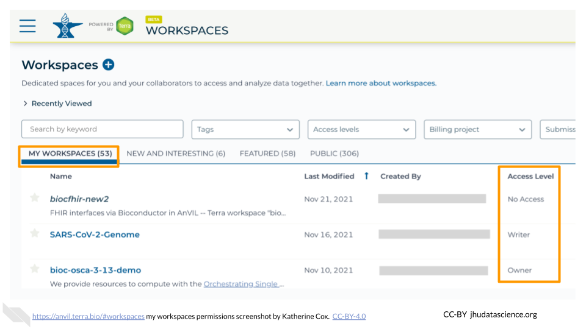
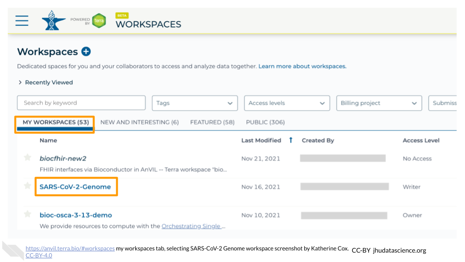
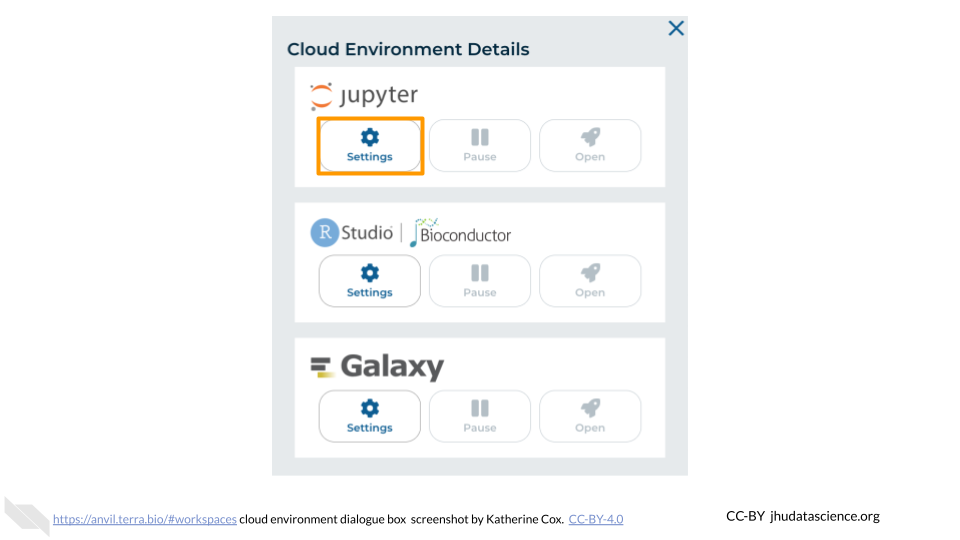
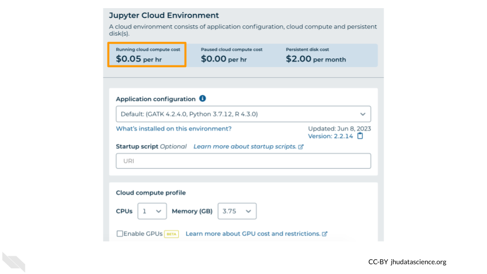
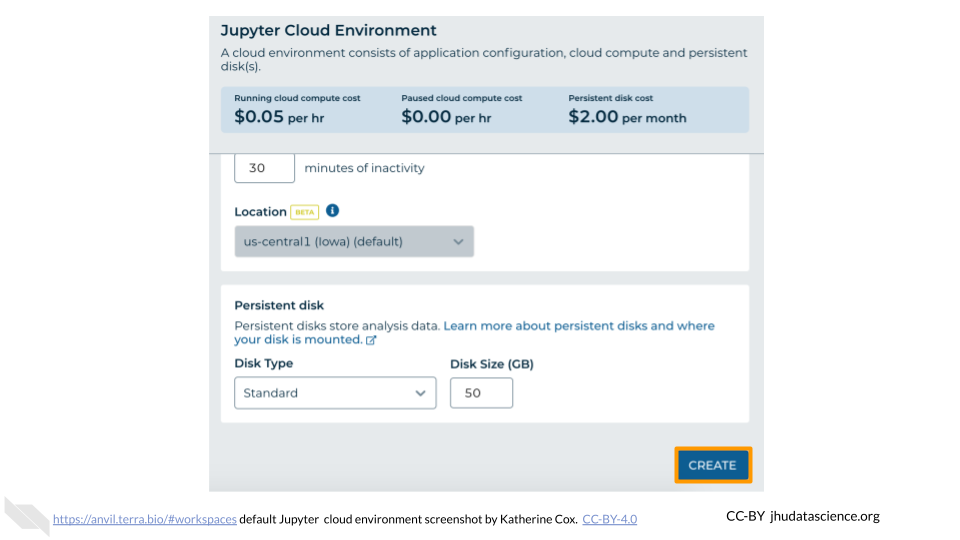
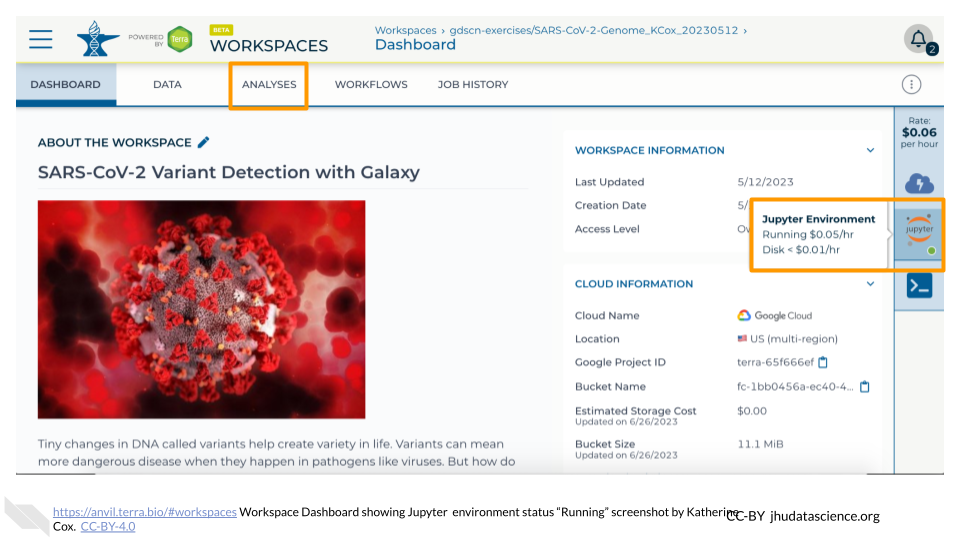

6 Preparation
If you plan to follow along with these exercises, there are a couple of things you will need to take care of first:
Quickstart
For this Demo, you will need to:
- Clone your own copy of the
demos-combine-data-workspacesWorkspace. - Launch a Jupyter Cloud Environment with the default settings (in your cloned Workspace).
- Review a few key AnVIL concepts to set context for the Demo. (If you are participating in a live workshop, these will be covered by the instructor. Otherwise, watch the video below.)
If you feel comfortable, you can take care of these things yourself and then proceed to the Exercises. Otherwise, the instructions below will walk you through the process.
6.1 Review Key Concepts
This 5-min video provides a high level summary of the exercises to follow. Several important concepts are introduced to provide context for the exercises including 1) the AnVIL data flow that minimizes costs and redundancy and 2) increasing number of production quality workflows in Dockstore (slides).
6.2 Create AnVIL account
You will need an AnVIL account in order to view Workspaces and run analyses.
- If you do not already have an account, follow these instructions to set one up. (You do not need to link any external accounts for these exercises.)
- Make sure that your Instructor (if participating in a workshop) or PI / Lab Manager has your username, so that they can add you to an appropriate Billing Project. You can’t clone or create Workspaces on AnVIL without a Billing Project.
6.3 Clone Workspace
When you “clone” a copy of an AnVIL Workspace, it can take a few minutes for everything to propagate to your new Workspace. If you are participating in a course or workshop, your instructor may have you start by cloning the Workspace, so that it is ready by the time you need it. (If you are working at your own pace, feel free to come back to this step later, when you’re ready to start using the Workspace.)
Follow the instructions below to clone your own copy of the Workspace for this Demo.
This will not work until your instructor has given you permission to spend money to “rent” the computers that will power your analyses (by adding you to a “Billing Project”).
On AnVIL, you access files and computers through Workspaces. Each Workspace functions almost like a mini code laboratory - it is a place where data can be examined, stored, and analyzed. The first thing we want to do is to copy or “clone” a Workspace to create a space for you to experiment. This will give you access to
- the files you will need (data, code)
- the computing environment you will use
Tip At this point, it might make things easier to open up a new window in your browser and split your screen. That way, you can follow along with this guide on one side and execute the steps on the other.
To clone an AnVIL Workspace:
Open Terra - use a web browser to go to
anvil.terra.bioIn the drop-down menu on the left, navigate to “Workspaces”. Click the triple bar in the top left corner to access the menu. Click “Workspaces”.

You are automatically directed to the “MY WORKSPACES” tab. Here you can see any Workspaces that have been shared with you, along with your permission level. Depending on how your instructor has set things up, you may or may not see any Workspaces in this tab.

Locate the Workspace demos-combine-data-workspaces. (The images below show the SARS-CoV-2-Genome Workspace as an example, but you should look for the Workspace demos-combine-data-workspaces.)
- If it has been shared with you ahead of time, it will appear in “MY WORKSPACES”.

- Otherwise, select the “PUBLIC” tab. In the top search bar, type the Workspace name demos-combine-data-workspaces.

- You can also go directly to the Workspace by clicking this link: https://anvil.terra.bio/#workspaces/anvil-outreach/demos-combine-data-workspaces.
Clone the workspace by clicking the teardrop button (
 ). Select “Clone”. Or, if you have opened the Workspace, you can find the teardrop button on the top right of the Workspace.
). Select “Clone”. Or, if you have opened the Workspace, you can find the teardrop button on the top right of the Workspace.

You will see a popup box appear, asking you to configure your Workspace
- Give your Workspace clone a name by adding an underscore (“_“) and your name. For example, "demos-combine-data-workspaces_Firstname_Lastname".
- Select the Billing Project provided by your instructor.
- Leave the bottom two boxes as-is.
- Click “CLONE WORKSPACE”.

The new Workspace should now show up under “MY WORKSPACES”. You now have your own copy of the Workspace to work in.
Now your Workspace should be ready for you by the time you need it.
6.4 Start Cloud Environment
Pause here if you are not going to be doing the Exercises right away. Once you start up Jupyter, it will cost money to keep it running. It costs a few cents an hour, so it’s quite cheap as long as you use it responsibly. But it can add up if you leave it running for days or weeks when you don’t need it.
If you are ready to proceed through the Exercises, go ahead and follow the instructions below to start Jupyter. It will take a few minutes to start up. You can work through the first couple of Exercises while you wait.
AnVIL is very versatile and can scale up to use very powerful cloud computers. It’s very important that you select the cloud computing environment described here to avoid runaway costs.
Open Terra - use a web browser to go to
anvil.terra.bioIn the drop-down menu on the left, navigate to “Workspaces”. Click the triple bar in the top left corner to access the menu. Click “Workspaces”.

Click on the name of your Workspace. You should be routed to a link that looks like:
https://anvil.terra.bio/#workspaces/<billing-project>/<workspace-name>.Click on the cloud icon on the far right to access your Cloud Environment options. If you don’t see this icon, you may need to scroll to the right.

In the dialogue box, click the “Settings” button under Jupyter.

You will see some configuration options for the Jupyter cloud environment, and a list of costs because it costs a small amount of money to use cloud computing.

Leave everything else as-is. To create your Jupyter Cloud Environment, scroll down and click the “CREATE” button.

The dialogue box will close and you will be returned to your Workspace. You can see the status of your cloud environment by hovering over the Jupyter icon. It will take a few minutes for Terra to request computers and install software.

When your environment is ready, its status will change to “Running”. Click on the “ANALYSES” tab to create or open a Jupyter Notebook.

From the ANALYSES tab, you can click on the name of an existing Jupyter Notebook to view and launch it, or click the “START” button to create a new Notebook.

Once you have clicked “CREATE” and your cloud environment status is “Creating”, you can go ahead and start the Exercises. Your cloud environment should be ready by the time you need it.